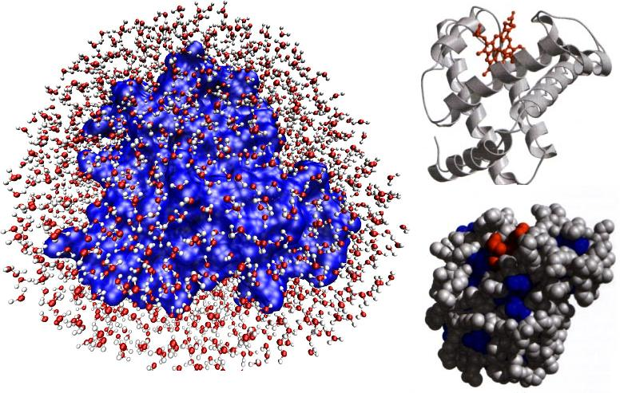

Dinámica Molecular en dos Dimensiones: Discos Sólidos.
La dinámica molecular es un tipo de simulación computacional, que tiene el objetivo de analizar el comportamiento de un sistema ya sea físico, químico o biológico; a través del tiempo.
La dinámica molecular es de gran importancia en el mundo de las ciencias, ya que permite estudiar aquellas moléculas que no se pueden observar por medio de microscopía electrónica o que presentan tiempos de equilibrios en escalas tan pequeñas como de orden de nanosegundos, que no se pueden medir en laboratorio o que simplemente su dinámica puede ser más clara por medio de métodos númericos y herramientas computacionales.

El objetivo de este proyecto es realizar una simulación de dos dimensiones con 4 discos sólidos, que se muevan sin fricción ni momento angular dentro de una caja de longitud unitaria, a estos discos se les puede asociar una energía cinética inicial aleatoria, resultando en una distribución de velocidades aleatorias para el sistema.
Cinemática de los discos
La posición de un disco en dos dimensiones, \(\mathbf{r} = (x, y)\), evoluciona en el tiempo según su velocidad:
donde: \(\mathbf{r}(t)\) es la posición del disco en el tiempo \(t\), \(\mathbf{v}(t)\) es la velocidad del disco en el tiempo \(t\), y \(\Delta t\) es el paso de tiempo en la simulación.
Colisiones con las paredes
Para detectar colisiones con las paredes del contenedor, se verifica si la posición del disco excede los límites del espacio definido. Al ocurrir una colisión, la componente de la velocidad perpendicular a la pared cambia de signo, mientras que la componente paralela permanece sin cambios. Matemáticamente:
Colisiones entre discos
Cuando dos discos colisionan, se aplican las leyes de conservación de la cantidad de movimiento lineal y la energía cinética, ya que las colisiones son perfectamente elásticas. Sean \(\mathbf{v}_1\) y \(\mathbf{v}_2\) las velocidades iniciales de los discos, y \(\mathbf{v}_1'\) y \(\mathbf{v}_2'\) las velocidades finales. Las nuevas velocidades después de la colisión se obtienen utilizando las siguientes ecuaciones:
donde: \(\mathbf{r}_1\) y \(\mathbf{r}_2\) son las posiciones de los discos y \(m_1\) y \(m_2\) son sus masas,
Condiciones iniciales
Para iniciar la simulación, se generan posiciones y velocidades aleatorias para los discos, garantizando que no estén superpuestos. Las posiciones \(\mathbf{r}_i\) y velocidades \(\mathbf{v}_i\) iniciales se calculan dentro del rango definido por las dimensiones del contenedor y las restricciones de colisión.